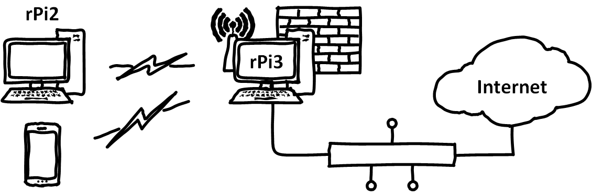

Introduksjon til Kommunikasjonsteknologi
Kurset gir deg oversikt over flere emner innen kommunikasjonsteknologi og informasjonssikkerhet.
Timeplan
De to første ukene er emnet integrert i studiestart:
Fra uke 35 har vi følgende rom og tider:
- onsdag, 08:15-12:00
- torsdag, 10:15-12:00 Lab, del 2 Sahara Lab
Innhold
Emnet består av oppstartsuka, etterfølgt av tre deler med litt forskjellig fokus:
Oppstartsuka
I første uken blir du kjent med datamaskiner og nettverk. Vi kommer til å konfigurere og starte vår egen webserver, og du lærer masse ting rundt dette.
Nettverk
Du studerer grunnlegende elementer av nettverk ved hjelp av praktiske øvelser. Du skal blant annet konfigurere ditt eget nettverk og lærer om viktig nettet tjenestere.
Til slutt vil du være i stand til å forstå hvordan du kan:
- lage et datanettverk,
- håndtere et datanettverk og
- beskytte et datanettverk.
Vi kommer til å bruke en Raspberry Pi som en trådløs ruter med en innebygd brannmur og håndtere uønsket tilgang med humor!

Sikkerhet
Du kommer til å lære om cybersikkerhet, etisk hacking og mye mer. Formålet er at du skal ha forståelse for hvorfor og hvordan IT-systemer utnyttes, hvor ligger sårbarheter, og hvilke tiltak kan brukes for å beskytte disse systemer. I labb-timene vil du bli kjent med virtualisering, VirtualBox og Kali Linux og du skal lære om passordknekking og sårbarhetsscanning.
Tingenes Internet
Vi bruker mye av det vi har lært så langt i emnet og ser på applikasjoner og teknologiene som blir brukt i tingenes internett. Vi kommer til å jobbe med hardware or sensorikk, overføre data og lager et samensatt overvåkingssystem.
Om Emnet
Forventninger til deg som student
Ett av hovedmålene med undervisningen er å engasjere alle for å skape et positivt læringsmiljø, og for å få alle til å lære og yte best mulig. Dette oppnåes gjennom aktivt arbeid med emnet gjennom hele semesteret, og deltakelse på alle de planlagte undervisningsaktivitetene.
Vi forventer at du:
- Deltar aktivt på alle forelesningene. Om du er forhindret, send en mail til Frank på forhånd.
- Deltar aktivt i labarbeidene på de oppsatte veiledningstimene.
- Bidrar til positivt og konstruktivt gruppearbeid.
- Bidrar i å skrive avsluttende rapport fra hver lab.
Vurdering
Emnet vurderes med bestått / ikke bestått. For å få bestått må man få godkjent alle de tre obligatoriske labarbeidene. Labarbeidene vurderes på bakgrunn av innlevert labrapport. Hver gruppe leverer felles rapport fra hvert labarbeid. Labrapportene må leveres innen de fristene som er satt i undervisningsplanen. Rapportene vil bli vurdert fortløpende til bestått / ikke bestått.
Det er ingen eksamen i emnet.
Gruppeinndeling
Fyll ut skjemaet for gruppeinndeling etter du har fått tilgang til din studentkonto. Vi bruker denne informasjonen til å lage gode teams.